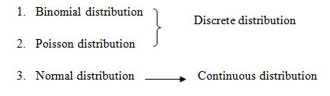
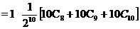
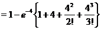

STAM101 :: Lecture 07 :: Poisson Distributions - properties, Normal Distributions- properties

Theoretical distributions are

Poisson
Normal Distribution_ Empirical Rule
Normal Distribution Qualitative sense of normal distributions
Standard Normal Distribution and the Empirical Rule
Discrete Probability distribution
Bernoulli distribution
A random variable x takes two values 0 and 1, with probabilities q and p ie., p(x=1) = p and p(x=0)=q, q-1-p is called a Bernoulli variate and is said to be Bernoulli distribution where p and q are probability of success and failure. It was given by Swiss mathematician James Bernoulli (1654-1705)
Example
- Tossing a coin(head or tail)
- Germination of seed(germinate or not)
Binomial distribution
Binomial distribution was discovered by James Bernoulli (1654-1705). Let a random experiment be performed repeatedly and the occurrence of an event in a trial be called as success and its non-occurrence is failure. Consider a set of n independent trails (n being finite), in which the probability p of success in any trail is constant for each trial. Then q=1-p is the probability of failure in any trail.
The probability of x success and consequently n-x failures in n independent trails. But x successes in n trails can occur in ncx ways. Probability for each of these ways is pxqn-x.
P(sss…ff…fsf…f)=p(s)p(s)….p(f)p(f)….
= p,p…q,q…
= (p,p…p)(q,q…q)
(x times) (n-x times)
Hence the probability of x success in n trials is given by
ncx pxqn-x
Definition
A random variable x is said to follow binomial distribution if it assumes non-negative values and its probability mass function is given by
P(X=x) =p(x) =
ncx pxqn-x , x=0,1,2…n
q=1-p
0, otherwise
The two independent constants n and p in the distribution are known as the parameters of the distribution.
Condition for Binomial distribution
We get the binomial distribution under the following experimentation conditions
- The number of trial n is finite
- The trials are independent of each other.
- The probability of success p is constant for each trial.
- Each trial must result in a success or failure.
- The events are discrete events.
Properties
- If p and q are equal, the given binomial distribution will be symmetrical. If p and q are not equal, the distribution will be skewed distribution.
- Mean = E(x) = np
- Variance =V(x) = npq (mean>variance)
Application
- Quality control measures and sampling process in industries to classify items as defectives or non-defective.
- Medical applications such as success or failure, cure or no-cure.
Example 1
Eight coins are tossed simultaneously. Find the probability of getting atleast six heads.
Solution
Here number of trials, n = 8, p denotes the probability of getting a head.
\ and
If the random variable X denotes the number of heads, then the probability of a success in n trials is given by
P(X = x) = ncx px qn-x , x = 0 , 1, 2, ..., n

Probability of getting atleast six heads is given by
P(x ³ 6) = P(x = 6) + P(x = 7) + P(x = 8)
Example 2 Ten coins are tossed simultaneously. Find the probability of getting (i) atleast seven heads (ii) exactly seven heads (iii) atmost seven heads
Solution
p = Probability of getting a head = 2
q = Probability of not getting a head =
The probability of getting x heads throwing 10 coins simultaneously is given by
P(X = x) = nCx px qn-x. , x = 0, 1, 2, ..., n
i) Probability of getting atleast seven heads
P(x ³ 7) = P (x = 7) + P(x = 8) + P (x = 9) + P (x =10)
ii) Probability of getting exactly 7 heads
iii) Probability of getting almost 7 heads
P(x £ 7) = 1 – P(x > 7)
= 1 symbol {P(x = 8) + P (x = 9) + P(x = 10)}

Example 3:20 wrist watches in a box of 100 are defective. If 10 watches are selected at random, find the probability that (i) 10 are defective (ii) 10 are good (iii) at least one watch is defective (iv) at most 3 are defective.
Solution
20 out of 100 wrist watches are defective
Probability of defective wrist watch, p
Since 10 watches are selected at random, n =10
P(X = x) = nCx px qn-x, x = 0, 1, 2, ..., 10

i) Probability of selecting 10 defective watches
P( x =10) =
ii) Probability of selecting 10 good watches (i.e. no defective)
P(x = 0) = 
=
iii) Probability of selecting at least one defective watch
P(x ³ 1) = 1 – P(x < 1)
= 1 – P(x = 0)
= 1 -
=1-
iv) Probability of selecting at most 3 defective watches
P (x 3) = P (x = 0) + P(x =1) + P(x = 2) + P(x = 3)
=
= 1. (0.107) + 10 (0.026) + 45 (0.0062) + 120 (0.0016)
= 0.859 (approx)
Poisson distribution
The Poisson distribution, named after Simeon Denis Poisson (1781-1840). Poisson distribution is a discrete distribution. It describes random events that occurs rarely over a unit of time or space.
It differs from the binomial distribution in the sense that we count the number of success and number of failures, while in Poisson distribution, the average number of success in given unit of time or space.
Definition
The probability that exactly x events will occur in a given time is as follows
P(x) = , x=0,1,2…
called as probability mass function of Poisson distribution.
where λ is the average number of occurrences per unit of time
λ = np
Condition for Poisson distribution
Poisson distribution is the limiting case of binomial distribution under the following assumptions.
- The number of trials n should be indefinitely large ie., n->∞
- The probability of success p for each trial is indefinitely small.
- np= λ, should be finite where λ is constant.
Properties
- Poisson distribution is defined by single parameter λ.
- Mean = λ
- Variance = λ. Mean and Variance are equal.
Application
- It is used in quality control statistics to count the number of defects of an item.
- In biology, to count the number of bacteria.
- In determining the number of deaths in a district in a given period, by rare disease.
- The number of error per page in typed material.
- The number of plants infected with a particular disease in a plot of field.
- Number of weeds in particular species in different plots of a field.
Example 4: Suppose on an average 1 house in 1000 in a certain district has a fire during a year. If there are 2000 houses in that district, what is the probability that exactly 5 houses will have a fire during the year? [given that e-2 = 0.13534]
Solution:
Mean, = np , n = 2000 and p =
l=2
The Poisson distribution is
= 0.036
Example 5
If 2% of electric bulbs manufactured by a certain company are defective. Find the probability that in a sample of 200 bulbs i) less than 2 bulbs ii) more than 3 bulbs are defective.[e-4 = 0.0183]
Solution
The probability of a defective bulb
Given that n = 200 since p is small and n is large
We use the Poisson distribution
mean, m = np = 200 ´ 0.02 = 4
Now, Poisson Probability function,
i) Probability of less than 2 bulbs are defective
= P(X<2)
= P(x = 0) + P(x = 1)
= e- 4 + e- 4 (4)
= e- 4 (1 + 4) = 0.0183 ´ 5
= 0.0915
ii) Probability of getting more than 3 defective bulbs
P(x > 3) = 1- P(x £ 3)
= 1- {P(x = 0) + P(x =1) + P(x=2) + P(x=3)}

= 1- {0.0183 ´ (1 + 4 + 8 + 10.67)}
= 0.567
Normal distribution
Continuous Probability distribution is normal distribution. It is also known as error law or Normal law or Laplacian law or Gaussian distribution. Many of the sampling distribution like student-t, f distribution and χ2 distribution.
Definition
A continuous random variable x is said to be a normal distribution with parameters µ and σ2, if the density function is given by the probability law
f(x)=; -¥ < x < ¥, -¥ < m < ¥, s >0
Note
The mean and standard deviation are called the parameters of Normal distribution. The normal distribution is expressed by X N(, 2)
Condition of Normal Distribution
i) Normal distribution is a limiting form of the binomial distribution under the following conditions.
a) n, the number of trials is indefinitely large ie., nand
b) Neither p nor q is very small.
ii) Normal distribution can also be obtained as a limiting form of Poisson distribution with parameter m
iii) Constants of normal distribution are mean = , variation =2, Standard deviation = .
Normal probability curve
The curve representing the normal distribution is called the normal probability curve. The curve is symmetrical about the mean (), bell-shaped and the two tails on the right and left sides of the mean extends to the infinity. The shape of the curve is shown in the following figure.
- x =
Properties of normal distribution
1. The normal curve is bell shaped and is symmetric at x = .
2. Mean, median, and mode of the distribution are coincide
i.e., Mean = Median = Mode =
3. It has only one mode at x = (i.e., unimodal)
4. The points of inflection are at x =
5. The maximum ordinate occurs at x = and its value is =
6. Area Property P(- < < + ) = 0.6826
P(- 2< < + 2) = 0.9544
P(- 3< < + 3) = 0.9973
Standard Normal distribution
Let X be random variable which follows normal distribution with mean and variance 2 .The standard normal variate is defined as which follows standard normal distribution with mean 0 and standard deviation 1 i.e., Z N(0,1). The standard normal distribution is given by ; -< z<
The advantage of the above function is that it doesn’t contain any parameter. This enables us to compute the area under the normal probability curve.
Note
Property of
Example 6: In a normal distribution whose mean is 12 and standard deviation is 2. Find the probability for the interval from x = 9.6 to x = 13.8
Solution
Given that Z~ N (12, 4)
= P(-1.2 ≤ Z ≤ 0)+P(0 ≤ Z ≤ 0.9)
= P(0≤ Z ≤ 1.2)+P(0 ≤ Z ≤ 0.9) [by using symmetric property]
=0.3849 +0.3159
=0.7008
When it is converted to percentage (ie) 70% of the observations are covered between 9.6 to 13.8.
Example 7: For a normal distribution whose mean is 2 and standard deviation 3. Find the value of the variate such that the probability of the variate from the mean to the value is 0.4115
Solution:
Given that Z~ N (2, 9)
To find X1:
We have P (2 ≤ Z ≤X1) =0.4115
P (0 ≤ Z ≤ Z1) =0.4115 where
[From the normal table where 0.4115 lies is rthe value of Z1]
Form the normal table we have Z1=1.35
Þ3(1.35)+2=X1
=X1=6.05
(i.e) 41 % of the observation converged between 2 and 6.05
| Download this lecture as PDF here |